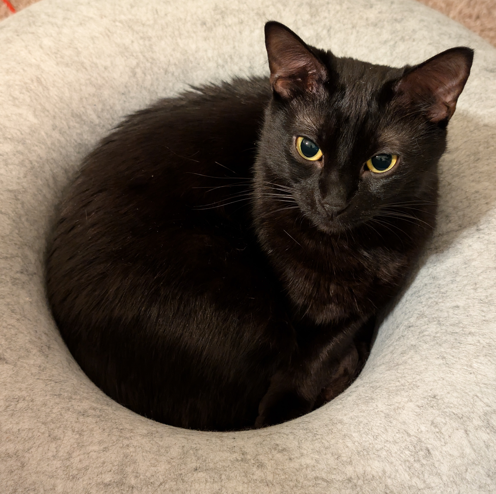

Other
Thank you for visiting my website!
You are welcome to utilize any of the codes or resources provided here under the MIT License, provided that appropriate attribution is given. Please note that I do not guarantee the mathematical or physical correctness of these tools, nor do I accept liability for any results obtained from their use.
The research and simulations presented here are ongoing; I reserve the right to update or modify content without notice as new findings emerge. Additionally, this website contains links to external sites that are not maintained by me, and I cannot guarantee the accuracy or completeness of information on those third-party platforms.
All thoughts and opinions expressed on this site are my own. Any work or materials not created by me remain the property and under the protection of their original authors or owners.
References ↓
Collaborators ↓
FMECL — My graduate school lab: https://fmecl.engr.tamu.edu/
WiSTL — A lab doing Richtmyer-Meshkov research that is in the same academic lineage: https://silver.neep.wisc.edu/~shock/
Hanif Zargarnezhad — My good friend's personal website: https://hzargarnejad.github.io/
Maggie:

AI Disclaimer / Opinion ↓
I am a bit of a Luddite, so be warned.
This website was built with the assistance of AI. Please be aware that faults in the code may have been missed.
All of the writing on this webpage and in my personal work is PURELY MY OWN. All faults and errors are my own. Please contact me for corrections.
I would like to take a second to share my opinion on the use of AI in this field. AI can be a very powerful tool, especially for coding. Its early days of training were essentially as an assistant for simple codes like Python. AI, as it currently stands, is unavoidable. When I Google "why is my centering wrong," the first thing I get is an AI response, and frankly, I would be stupid not to accept its correction most of the time. However, AI cannot and should not replace human interpretation. In CFD in particular, it is often repeated that "EVERY SIMULATION IS WRONG," followed by something to the effect of, "What makes CFD powerful is we know why it is wrong." Extensive use of AI to develop methods and interpret results is extremely dangerous because, as soon as you remove human interpretation, we are blindly trusting a method which cannot be exactly right. I look forward to the heights that research can reach, but I caution that the overzealous use of AI in a field may curtail years of progress if not properly controlled.